How to run the desktop app and use every menu — written in plain language, one feature at a time.
This manual explains how to start ContactsFreeShare and what each menu and page does. You can read it cover to cover, or jump straight to a chapter from the contents below. Throughout, the appear in color so they're easy to spot, and figures show you where things are on screen.
ContactsFreeShare runs on your own computer and shows itself inside your web browser. Nothing is published to the internet; the browser is simply the window the app uses.
To start it, open the ContactsFreeShare folder and double-click
Start ContactsFreeShare.command on a Mac, or Start
ContactsFreeShare on Windows. (If you installed the Desktop shortcut, you can use
that icon instead.) A moment later your browser opens automatically to the address
http://127.0.0.1:8000, which just means "this computer." If the app is already
running, double-clicking again simply brings the existing window forward instead of
starting a second copy.
The first screen you land on is , because almost everything the app does begins with connecting your Google account. We'll cover that in Chapter Three. To close the app, close the browser tab and quit the launcher window.
Your contacts, photos, and settings are stored privately on your own computer in a ContactsFreeShare folder (on a Mac, inside Library → Application Support). They are only sent to Google when you choose to upload — see Chapter Three.
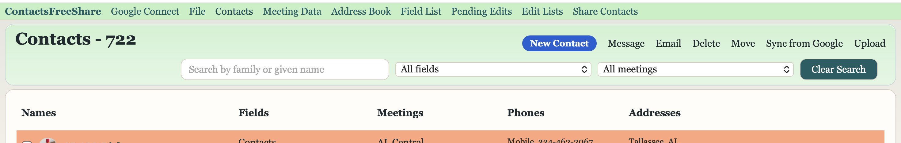
The strip across the top of every page is your map of the whole app. Here is what each item is for; the rest of the manual takes them one by one.
| Menu | What it's for |
|---|---|
| The app menu — About, Settings, Update App, and App Revisions (Chapter Four). | |
| Sign in to Google, sign in as the Editor, and upload your changes (Chapter Three). | |
| Import contacts, export them, and make backups (Chapter Five). | |
| The main list of everyone, with search and filters (Chapter Six). | |
| Printable meeting-directory layouts (Chapter Eight). | |
| Design and print a PDF address book (Chapter Nine). | |
| Build and print custom field/meeting lists (Chapter Ten). | |
| Change requests waiting to be applied (Chapter Eleven). | |
| A history of edits made to contacts and meeting data (Chapter Twelve). | |
| Opens the separate sharing website (Chapter Thirteen). Appears only when you're signed in and allowed to edit. |
Some menus are simple links that open a page; others (the , , and menus) open a small dropdown when you hover or click them.
This is the most important page to understand, because it controls how your contacts move between the app and Google. Its full title on screen is Google Connect Settings, and it's where you connect your account, sign in to make changes, and push your work back to Google.
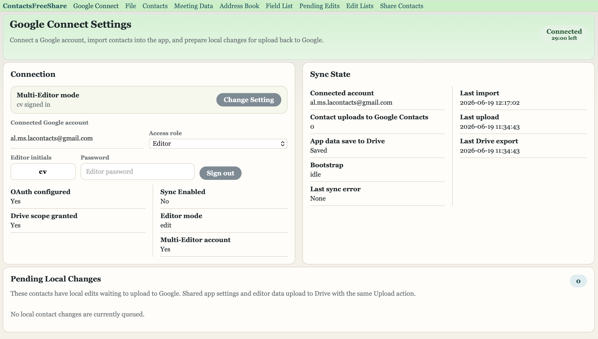
If you're not connected yet, click Sign In With Google and approve access in the window that appears. Once connected, a green Connected badge is shown. If you ever need to use a different account, use Reconnect / Switch Account, and Disconnect removes the connection entirely.
ContactsFreeShare is built so that several people can share one set of contacts safely. To prevent two people from overwriting each other, only one person can be the Editor — the person allowed to make changes — at any moment. Everyone else can still look around in what the app calls NO-EDIT mode.
How sign-in looks depends on a single setting (Chapter Fourteen):
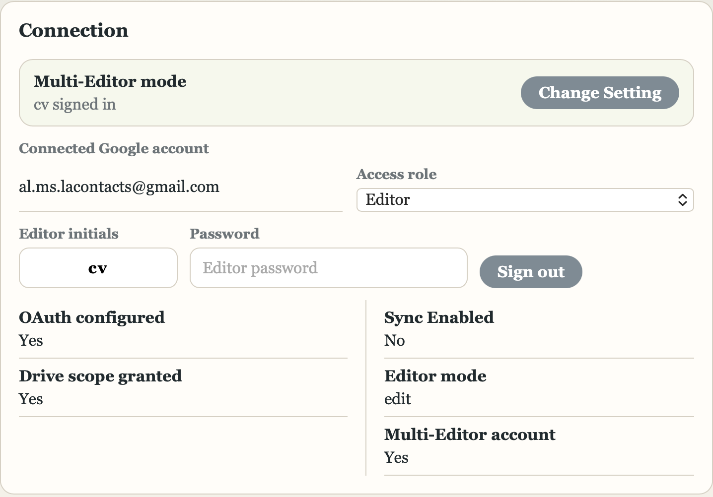
When you sign in as the Editor, the app reserves the "edit lock," pulls down the latest shared information, and lets you make changes. If someone else is already the Editor, you'll see a notice telling you who it is and how long until their session ends; until then the app stays in NO-EDIT mode. If a previous Editor left without signing out, you may be offered the chance to Take Over the stale session.
An Editor session lasts a set length of time (you choose it in Settings). Two minutes before it ends, a box titled Editor Time Almost Up appears with a countdown. Click Add 15 minutes to keep working, or Sign out to finish. If the time runs out, the app signs the Editor out for you so the next person can take a turn.
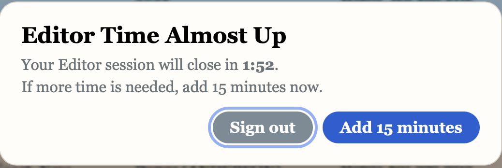
As you edit, your changes are saved on your computer first. When you're ready to publish them, click Upload (it appears on both the Google Connect and Contacts pages whenever there's something waiting). Upload sends your contact changes to Google Contacts and saves the shared settings, lists, and layouts to Google Drive. Signing out as the Editor also uploads any pending contact edits before releasing the lock.
The first menu, named after the app itself, holds four items.
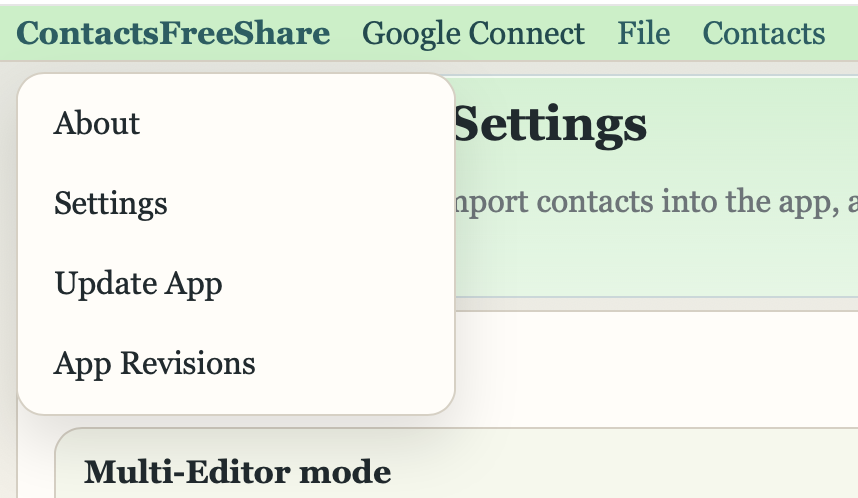
About opens a small window showing the app's name and version number — handy if you're ever asked which version you're running.
Settings opens the main settings page, where you control colors, the Editor system, the shared Drive folder, and the connection to the sharing website. Because there's a lot there, it has its own chapter (Chapter Fourteen).
Update App checks whether a newer version of ContactsFreeShare is available. It shows a brief "Checking for updates" message and then takes you to the App Revisions page with the result.
App Revisions shows a dated list of what changed in each version. If an update is available, a panel here lets you Install or Download the new version. Installing closes the app and replaces it with the newer one.
The menu is where contacts come in and go out.
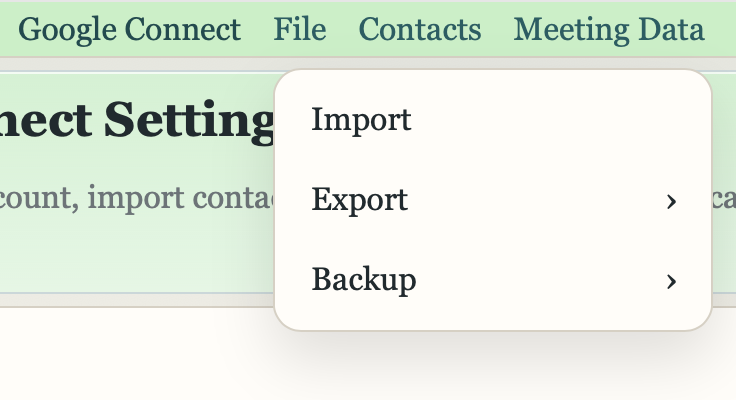
Import opens a page with three choices. Sync from Google Contacts is the gentle one: it brings in only the contacts that changed in your Google account and leaves everything else untouched. Import from Google Contacts is the heavy one: it erases the app's contacts and replaces them with a fresh copy from Google — useful when starting over, but it asks you to confirm by clicking Erase App Contacts And Import. The third choice restores Contacts or MeetingData from a backup you previously saved in Google Drive.
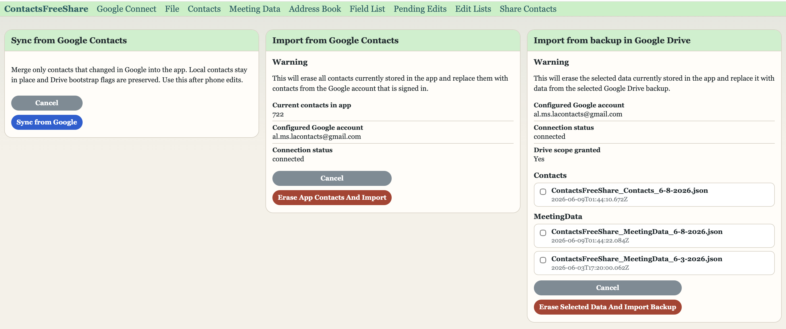
"Import from Google Contacts" and "Erase Selected Data And Import Backup" both replace what's in the app. When in doubt, use "Sync from Google Contacts," which only merges changes.
Export saves your contacts to a file. You can choose App CSV (a spreadsheet in the app's own format), Google CSV (a spreadsheet formatted the way Google likes), or vCard (the standard contact-card format that most phones and address books understand). After picking a format, the app asks whether to save it On This Computer or In Google Drive.
Backup saves a complete safety copy. You can back up your Contacts or your MeetingData, and send each either to your computer or to a Backups folder in Google Drive. These are the files the Import page can later restore from.
The page is the heart of the app — the full list of everyone, with the total count shown in the title (for example, Contacts - 722). Names are listed alphabetically by family name, then given name.
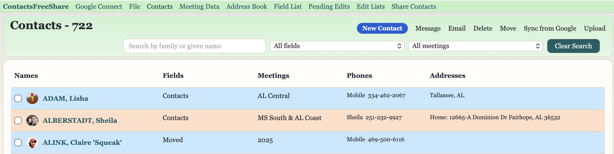
Type into Search by family or given name to narrow the list as you type. The All fields and All meetings dropdowns let you show only the people in a particular field or meeting; those same dropdowns also let you add, rename, or remove a field or meeting. Clear Search resets everything back to the full list.
Across the top you'll find buttons that act on the list or on the people you've checked:
| Button | What it does |
|---|---|
| New Contact | Opens a blank form to add someone. |
| Message | Texts the selected people using your computer's messaging app. |
| Starts an email to the selected people. | |
| Delete | Moves the selected people to "Deleted" (and permanently removes them if they're already there). |
| Move | Moves the selected people to a different field or meeting at once. |
| Sync from Google | Pulls in recent changes from Google (when connected and editing is allowed). |
| Upload | Sends your pending changes to Google and Drive. |
To select people, use the checkboxes on the left of each row; the All and None shortcuts help when you want everyone or want to start over. To open a person, just click their row or their name.
Clicking a name opens that person's detail page — a clean, read-only summary. Phone numbers show call and text icons, email addresses are clickable, and addresses include map links. You'll also see their field and meeting assignments, any notes or custom fields, birthday, and a small Administration panel with technical details like the Google contact ID.
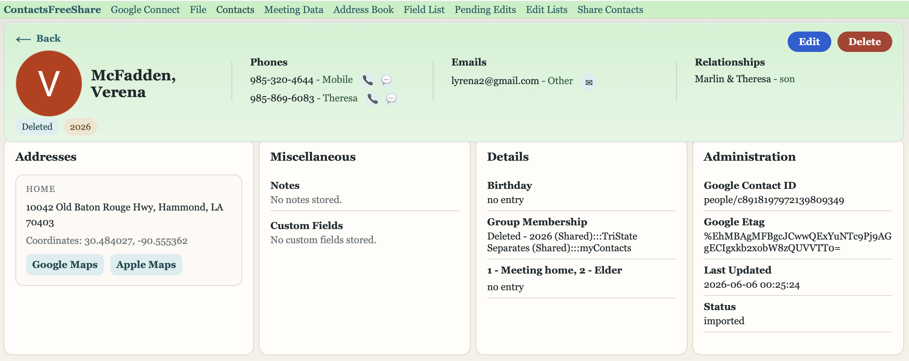
From the detail page, Edit opens the form where you change information, and Delete moves the person to Deleted. A deleted person shows a Restore button so you can bring them back.
The edit form is organized into sections. At the top are the name, birthday, and a Do not Print checkbox (which keeps someone out of printed books). Below that are repeatable sections for Phones, Emails, Addresses, Relationships, Custom Fields, and Notes — each with an Add button to include another and a Remove to take one away. Near the bottom are the Fields and Meetings this person belongs to. When you're done, click Save Contact; Cancel discards your changes.
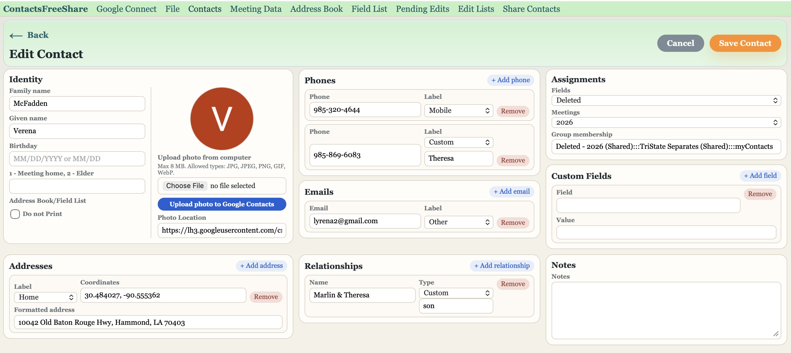
To add a picture, use Upload photo from computer. A Crop Contact Photo window opens where you can drag the photo to position it and use the Zoom slider to size it; click Use Crop when it looks right. For people who already exist in Google, Upload photo to Google Contacts sends the picture up with your next upload.
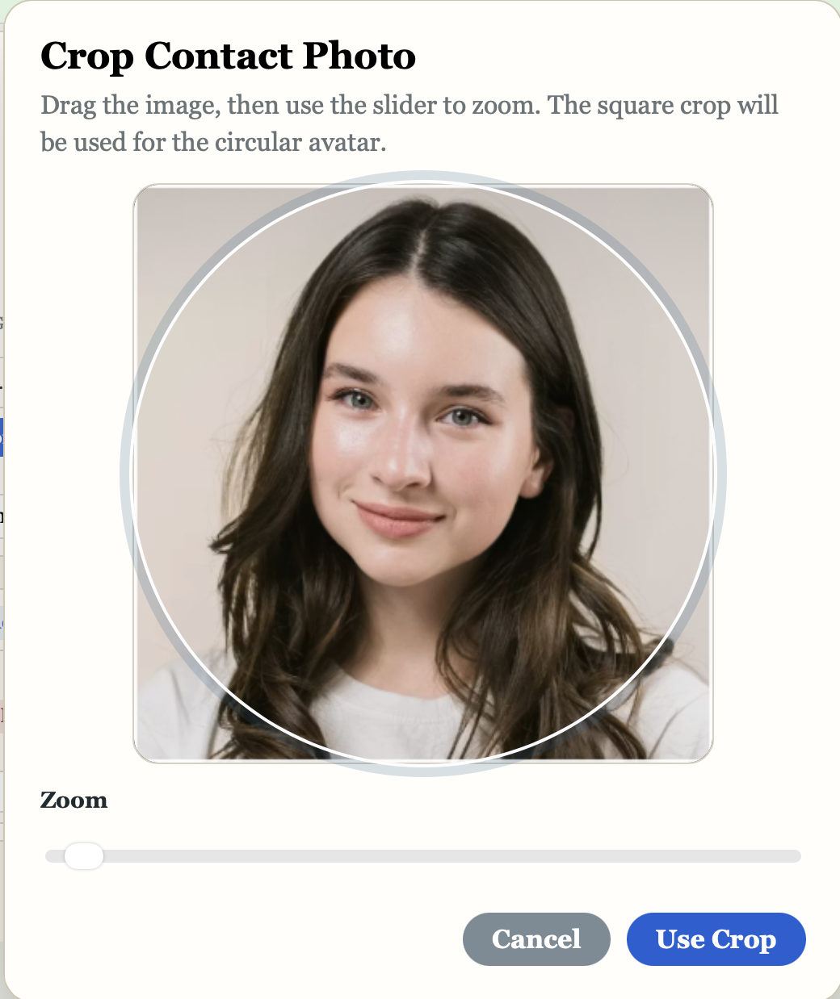
To move several people to a different field or meeting, check them on the Contacts list, click Move, choose the destination, and confirm with Move Contacts.
The page manages printable meeting-directory layouts, organized by field and meeting. The opening page, titled MeetingData, lists each section with how many rows and cells it contains, and the same search and field/meeting filters you know from the Contacts page.
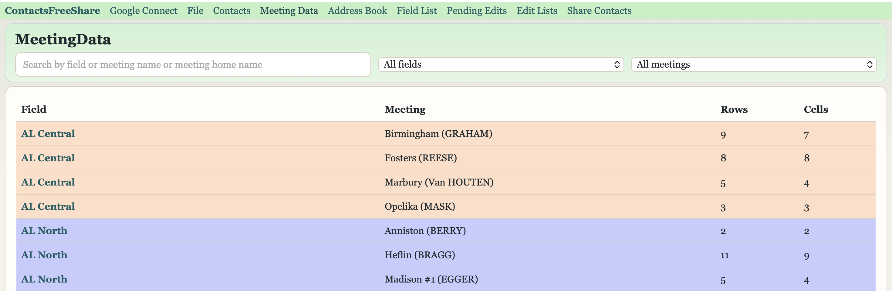
Clicking a section opens the MeetingData Editor, a visual canvas that mirrors the printed page. There you arrange rows, adjust the column layout, gap, and font size, choose a Book Layout, preview the printed result with Meeting Print Preview, and keep your work with Save Layout.
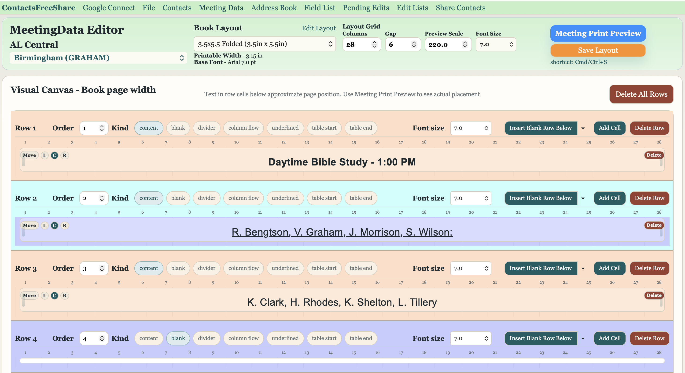
The page is a design studio for producing a printed PDF address book from your contacts. The left side holds layout choices — page size, fonts, line spacing, and margins — while the middle shows a live preview of how a page will look, and the right side holds printing options.
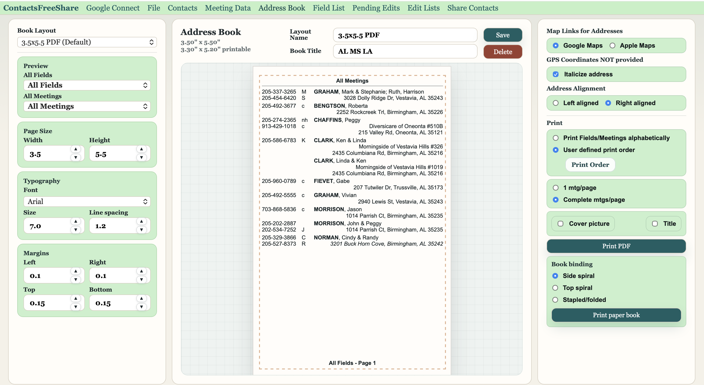
On the right you can decide whether addresses link to Google or Apple Maps, choose left or right alignment, and pick the printing order — alphabetical or a custom order you arrange by dragging. You can add a cover picture, title, and date, choose how meetings flow onto pages, and finally produce the document with Print PDF. There are even binding choices — side spiral, top spiral, or stapled — for Print paper book. Layouts you create can be saved and reused.
The page builds simpler printed lists for a particular field or meeting — lighter than the full address book. As with the Address Book, the left sidebar holds page options (one or two columns, address alignment, page numbers, and more), the middle is a builder where you arrange what appears, and the right sidebar controls fonts, sizes, and margins. You can save named templates and print with Print List.
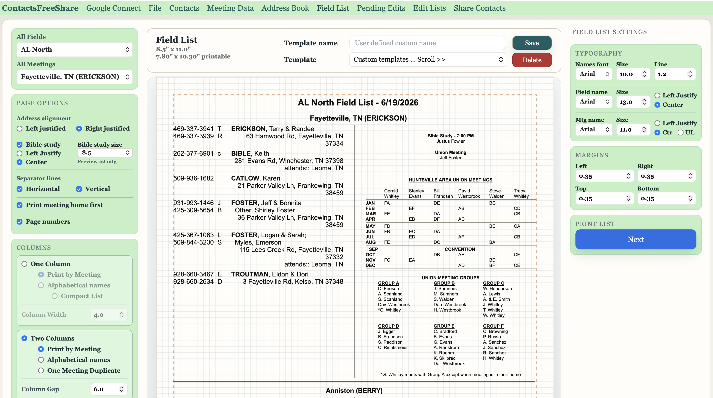
The page is a shared list of change requests — often sent in from the mobile app — that the Editor reviews and applies. Each row records the date, the person or event the change is about, and the change itself, and rows save automatically as you type.
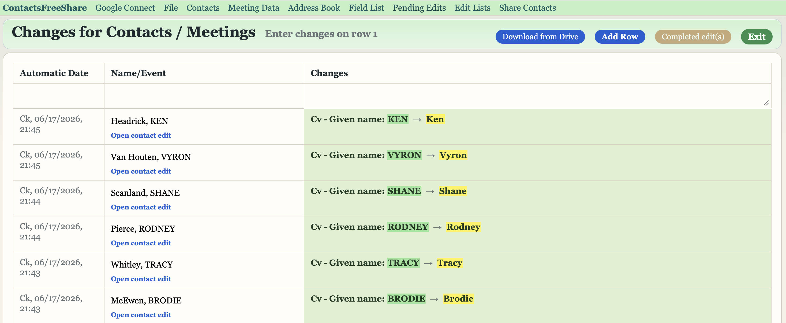
Use Download from Drive to pull in requests submitted from phones, Add Row to jot a new one, and Completed edit(s) to tick off requests you've handled. As with everything else, your changes reach Google Drive the next time you Upload.
The menu offers two history pages that record who changed what. The Contacts Edit List shows each contact edit with the editor's initials, the contact's name, the field that changed, and the text before and after. The Meeting Data Edit List does the same for meeting-directory changes. Clicking an entry jumps you straight to the relevant edit. These pages are read-only — a helpful trail rather than a place to make changes.
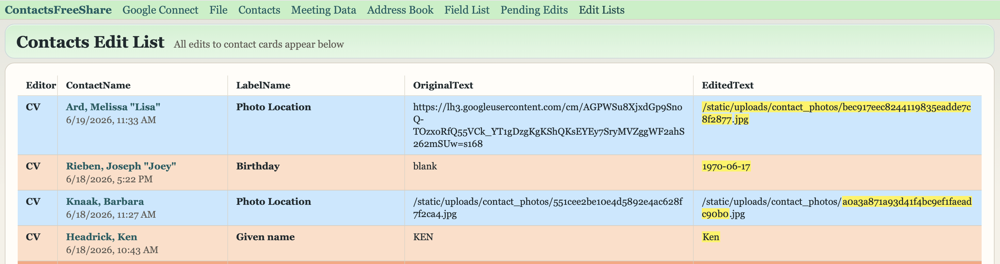
The link opens the separate sharing website in a new browser tab — the place where you can share a group of contacts with other people and have your updates delivered to them automatically. It appears in the menu only when you're connected to Google and allowed to edit (in multi-Editor mode, only when you're the signed-in Editor). The website's address and key are set up once under Settings (Chapter Fourteen). Using the sharing site itself is covered in its own separate guide.
Open to reach the page titled ContactsFreeShare Settings. When the app is set for multiple Editors, you must be signed in as the Editor to change anything here. Click Save Settings when you're done.
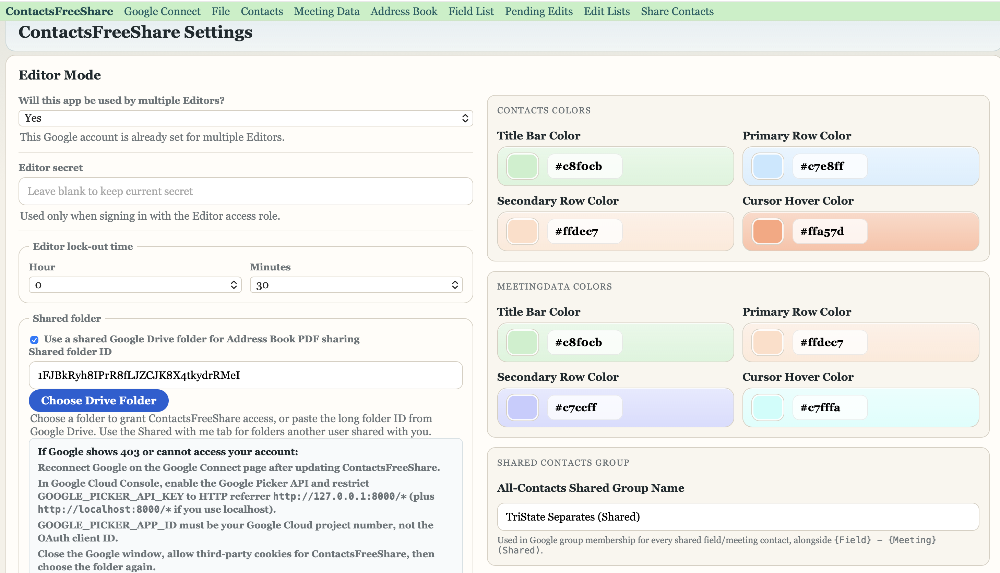
The settings are grouped into sections:
| Section | What it controls |
|---|---|
| Editor Mode | Whether the app is used by one person or by multiple Editors. Choosing "Yes" turns on the Editor sign-in, password, and one-at-a-time lock described in Chapter Three. |
| Single-Editor save location | (Single-person mode) Whether edits stay only on this computer, or also go up to Google Contacts and Drive. |
| Editor secret | (Multi-Editor mode) The password people type to sign in with the full Editor role. |
| Editor lock-out time | (Multi-Editor mode) How long an Editor session lasts before the time-up warning appears — set in hours and minutes. |
| Shared folder | The Google Drive folder used to share Address Book PDFs, with a button to choose it. |
| Share web app | The address and key for the separate sharing website, so the Share Contacts link and automatic recipient updates work. |
| Contacts Colors | The title-bar, row, and hover colors on the Contacts screens. |
| MeetingData Colors | The same color choices for the Meeting Data screens. |
| Shared Contacts Group | The name of the Google group used to hold shared contacts. |
| Term | Meaning |
|---|---|
| Editor | The one person currently allowed to make changes. Only one Editor can be active at a time. |
| NO-EDIT mode | What everyone else sees while someone else is the Editor — you can look but not change. |
| Upload | Sending your saved changes up to Google Contacts and Google Drive. |
| Sync from Google | Bringing in only the contacts that changed in your Google account, without erasing anything. |
| Import (erase & replace) | Replacing the app's contacts with a fresh copy from Google or a backup. |
| Field / Meeting | The two ways contacts are grouped throughout the app, used for filtering and printing. |
| Do not Print | A per-contact switch that keeps someone out of printed books and lists. |
| Backup | A complete safety copy of your contacts or meeting data, saved to your computer or Drive. |